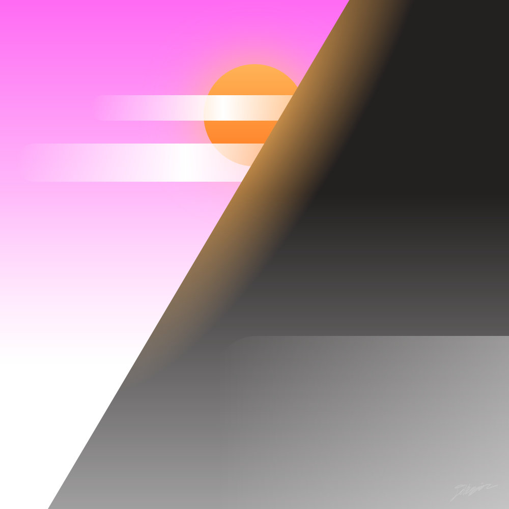
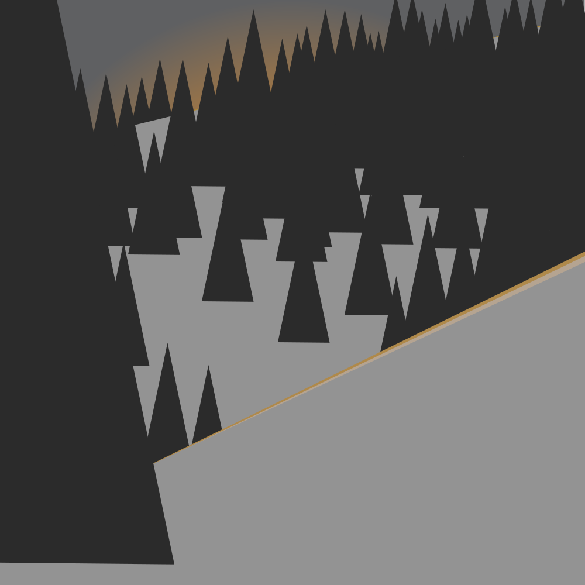

A lot of my time in this class was spent on layout for posters, letters, brochures and things like that but unfortunately, I don’t have any of those anymore. I still have my best art though, mostly vector art but some of them were made in Photoshop. All of these pieces I either did in my free time or as part of a loosely defined assignment—no step-by-step assignments in here.
Tap images to view the original file.
Misty Mountains. Photoshop. This was a homework project, I was assigned to draw a cabin by a lake with mountains. As you can see I forgot the lake, but I think it turned out pretty well regardless.Impossibly Possible Tower. Illustrator. This isometric illustration was inspired by the game Monument Valley.Perspective. Illustrator. I was further messing with isometric art when I ended up with these four jagged lines. They were reminicent of a building, but it was sort of tricky—like it had two perspectives at once. So I ran with it.Phone Concept. Illustrator. I spent a lot of time on this one. Maybe too much. It's all separated cleanly into layers: hardware, software, and shadows, and within software it's divided further into the status bar, weather widget, and so forth.Most of a Sunrise. Illustrator. This was a homework project where I was assigned to recreate a photo, which I had taken a few weeks earlier.Satellites. Illustrator. This is one of my favorite illustrations of mine. It somehow feels huge and small at the same time.Perspective City. Illustrator. In this assignment we were tasked to work with perspective.

Pretty Scene. Illustrator. This is just a quick illustration I did to play with color.

Slope. Illustrator. Again, just a quick illustration experimenting with color and light.Sailor Concept. Illustrator. This illustration is a concept for a sailing game.The Snow Man. Photoshop. That snowman is definitely up to something. This piece was designed in Photoshop and exported as an STL file to be 3D printed as a keychain. It's made up of two layers: The diagonal lines in the background, and the art, text, and border in the foreground, which I darkened with black paint.